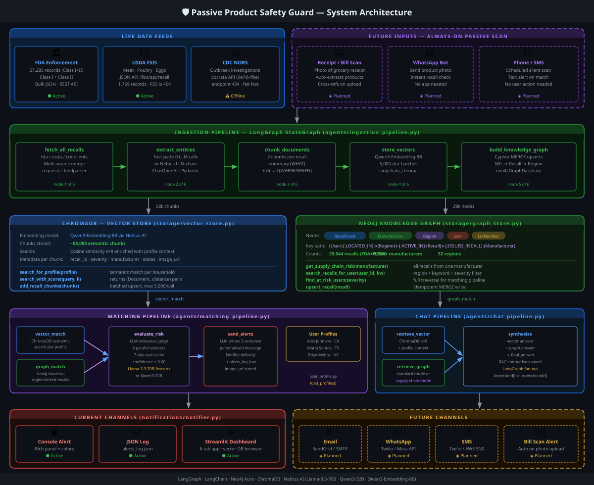
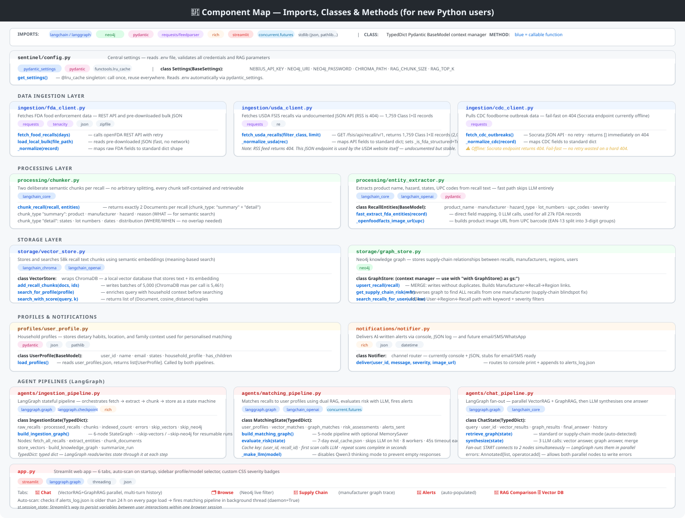

The Problem Nobody Talks About
Why food recalls are invisible to most people
The FDA publishes every food recall. It's all public. Class I recalls — the ones with genuine risk of serious harm — go out immediately. The information exists.
The problem is the assumption buried in the system: that consumers are monitoring a database, reading enforcement reports, and cross-referencing their grocery purchases against a list of affected lot numbers.
Most people aren't. And in rural communities — where product variety is lower, alternatives are fewer, and people buy in bulk — a recall hitting one product means a lot more households are exposed than the data suggests.
The idea was simple: what if the system found you, instead of the other way around?
The gap
Recalls published in government databases most consumers never visit
News coverage reaches educated urban audiences — not everyone
Existing apps require manual searches — passive knowledge required
Lot number matching requires the consumer to read the fine print on their product
The system should monitor recalls and push alerts to households — zero effort required from the consumer
Why the Supply Chain Is the Real Risk
The blindspot vector search can't fix
When a manufacturer gets a recall, often only one product is officially listed. But the same factory, the same ingredient supplier, the same production line may have touched dozens of other products. A vector search on "is this specific SKU recalled?" returns nothing. A graph traversal on "what else came from this manufacturer?" returns everything.
Supply chain traversal — how the graph finds what keyword search misses
One Cypher traversal finds all users exposed by any recall from any manufacturer active in their region — without knowing which specific product to search for.
Vector search alone
Query: "Is Skippy peanut butter recalled?"
Finds: Direct semantic matches to that exact product in recall text.
Misses: Other peanut butter brands from the same factory that share the contaminated line.
Graph traversal
Query: Traverse from manufacturer → all recall events → all affected regions.
Finds: Every product from this supplier across all recall events.
Catches: The indirect risk the consumer never thought to search for.
How It Works
Two pipelines, two databases, one alert
Ingestion Pipeline
29,044 records → 58,000 chunks → ~25 min total
The bottleneck is always the embedding API. We log every batch with timing so you know exactly where you are.
Matching Pipeline (Alert Scan)
First scan: ~8 min (LLM calls). Repeat scans: seconds (7-day cache).
Evaluated (user, recall) pairs are cached. Re-scans only call the LLM for new pairs.
Data Sources
FDA Enforcement
27,285 Class I + II records from bulk JSON export. Fast-path extraction — no LLM needed. Deduplicated by recall_id.
USDA FSIS
1,759 meat, poultry, and egg recalls. The official RSS is 404. We use the undocumented JSON API the USDA frontend calls itself.
CDC NORS
Foodborne outbreak data for early-warning signals. Currently offline (Socrata endpoint changed). Fails fast, doesn't block the run.
What We Learned Building It
Six decisions and fixes worth remembering
Click any lesson to expand.
The auto-scan triggered on every page refresh because st.session_state.scan_started resets when the browser reloads. The fix: write a lock file to disk (data/.scan_running) when the scan starts and delete it in finally. The lock survives page refreshes because it's on the filesystem, not in memory. A 10-minute stale guard clears crashed locks automatically.
Rule: anything that needs to survive a browser reload goes to disk. Anything that needs to be reset per session goes to session_state.
The original USDA client used feedparser on the official RSS URL. That URL returns 404. Silently. The code caught the exception and returned an empty list — so USDA data was simply missing with no error message.
The fix: inspect what the USDA's own website calls in the browser network tab. It hits https://www.fsis.usda.gov/fsis/api/recall/v/1 — an undocumented but stable JSON API that returns 2,006 structured records. More than the RSS ever carried.
Rule: when an official API is broken, inspect the network traffic of the official website. Their frontend is calling something.
The original chunker built one text blob and split at 512 tokens with 64-token overlap. For unstructured prose that's fine. For structured recall data — product, company, reason, states, lot numbers — the split boundary is random. A query about salmonella might hit a chunk that contains the distribution states but not the product name.
The fix: two deliberate chunks per record. A summary chunk (what: product, company, hazard, reason) for semantic search, and a detail chunk (where/when: states, lot numbers, dates) for precision filtering. No overlap needed — each chunk is self-contained.
Rule: for structured records, chunk by semantic role, not by character count.
The Neo4j query returned one row per (user, region, recall) triple. If a recall is active in TX, CA, and NY, and a user lives in TX, that's one row. But if the user lives in TX and CA, that's two rows for the same (user, recall) pair — the evaluation step then called the LLM twice for the same combination.
The fix: collapse at the Cypher level using WITH u, r, collect(DISTINCT reg.stateCode) AS matchedStates, returning one row per (user, recall). Add a cap of 2,000 results. Add a 7-day evaluation cache so the LLM is only called for new (user, recall) pairs.
Rule: aggregate at the database level, not in Python. And cache LLM results — they don't change unless the recall or profile does.
The FDA enforcement bulk export contains duplicate recall numbers — the same recall appearing more than once in the raw data. ChromaDB's upsert validates that IDs are unique within a single batch call, so 709 duplicate IDs inside one batch triggered a hard error that crashed the entire ingestion pipeline after 20+ minutes of embedding work.
The fix: deduplicate the {id: doc} dict before batching — last record wins on collision. Three lines of code, added before the batch loop.
Rule: always deduplicate before sending to any storage layer. Never assume source data is clean.
The ingestion pipeline initially showed one line after completion. When it ran for 10+ minutes with no output, there was no way to know if it was stuck at embedding (slow, expected) or at entity extraction (fast, should have finished) or had crashed silently.
We added numbered step headers, per-source fetch logs, per-batch timing for ChromaDB, and 10%-interval progress for Neo4j writes. The output now tells you exactly where you are and how long each step is taking.
Rule: instrument slow pipelines before running them. Waiting without feedback is guessing.
For the Engineers
Architecture & component map
If you're curious how it's actually wired — two diagrams below. The first shows every system component and how data flows between them. The second is a file-by-file component map showing imports, classes, and key methods for each module. Click either diagram to open full size.
System Architecture

Data sources → ingestion pipeline (LangGraph) → ChromaDB + Neo4j → matching pipeline → alerts
Component Map — Imports, Classes & Methods

Each Python module with its library dependencies, classes, and callable methods. Colour-coded by library type.
Phase 1: What Shipped
Six tabs, two databases, one alert pipeline
💬
Chat
Ask in plain English. Hybrid retrieval: ChromaDB for semantics, Neo4j for supply chain. One grounded answer, both sources visible.
🗂️
Browse Recalls
29,000+ records. Filter by severity, state, keyword. Severity-coded cards with manufacturer and hazard details.
🔗
Supply Chain
Enter any manufacturer. Graph traversal finds every recall linked to that company — direct and indirect. The blindspot finder.
🚨
Alerts
Personalised household alerts. Runs automatically on startup. Each alert is LLM-evaluated for genuine relevance — no false positives.
🔬
RAG Comparison
Side-by-side: vector search vs graph traversal on the same query. See when relationships matter more than semantics.
🗄️
Vector DB Browser
Browse every chunk in ChromaDB. Filter by source (FDA/USDA), severity, keyword. Pagination. Confirms exactly what data is indexed.
Phase 2: The Moment of Purchase
SMS alert before you get home
Phase 1 alerts you when a recall is issued. Phase 2 alerts you at the moment you buy something recalled. No app. No account. Just a text message.
🛒
You buy groceries
📱
Receipt arrives by SMS
🤖
LLM parses line items
⚠️
Alert if match found
SMS received 14:32
⚠️ Food Safety Alert
You purchased Acme Organic Peanut Butter (16oz) today. This product was recalled June 3 for potential Salmonella contamination — Lot LOT-2024-A.
Do not consume. Return to store for full refund. Reference recall F-1234-2024.
Already built toward this
- • UPC codes stored in ChromaDB metadata
- • Supply chain graph links manufacturer → product
- • Entity extractor handles unstructured text
- • Alert delivery pipeline ready
Still to build
- • Twilio SMS webhook receiver
- • Receipt line-item parser
- • UPC → product name (Open Food Facts)
- • User phone enrollment flow
Why no app required
An app requires download, account creation, and active use. SMS requires nothing. Older phones, low data plans, rural households — all reached exactly the same way.
Everybody eats food.
Nobody should need a food science degree, a government database login, or the time to cross-reference their grocery receipt to know when their food is safe. Phase 1 builds the watchdog. Phase 2 puts it in your pocket — without requiring you to know it's there.
What's Still on the Learning Path
Phase 1 shipped — these come next
This is a live learning project. I'm working through a GenAI course and deliberately incorporating each new capability as I study it. Here's what I haven't applied yet — and what I'm planning to add as I progress.
Pinecone — Hybrid Search
Currently using ChromaDB for local vector search. Pinecone's hybrid dense+sparse mode (BM25 + embeddings) would improve recall on exact product codes and lot numbers.
Whisper — Voice Input
Whisper transcription would let users speak a product name or barcode scan instead of typing. Particularly useful for the Phase 2 SMS-to-alert loop.
LangSmith — Tracing & Evals
No systematic eval dataset yet. LangSmith would track which queries produce poor answers and let me build a ground-truth set to measure retrieval quality over time.
Re-rankers — Precision at Top-K
Current retrieval returns top-K by cosine similarity. A cross-encoder re-ranker would re-score chunks against the actual query, lifting the most relevant result to position 1.
Where We Are · Where We're Going
Project Roadmap
Proof of Concept
End-to-end GraphRAG pipeline live. Ingests 29K+ recalls, builds a supply-chain knowledge graph, evaluates relevance per household, delivers personalised alerts. People are using it.
Learning in Progress
Applying each new GenAI capability directly to this project as I study it. No toy demos — every addition wired into a real food safety use case.
Purchase-Time Safety
Alert fires the moment you buy something recalled. No app, no login — just an SMS. A system so quiet you forget it exists until it saves you.
— future SMS, 14:32 —
⚠️ You purchased Acme Organic Peanut Butter today. Recalled June 3 for Salmonella — Lot A.
Do not consume. Return for full refund.